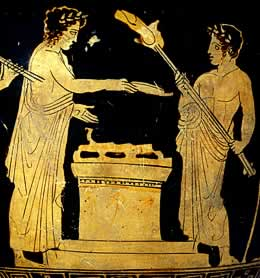

Day 3: Sacrifices to Zeus

Vase showing a sacrifice scene This is the morning when Zeus is honoured with the sacrifice of 100 oxen, given by the people of Elis, the city responsible for the games at Olympia. This is the most important religious event of the festival, although all the sporting activities also honour Zeus. The athletes and ambassadors of many Greek city-states form a procession that winds around the Altis. The ambassadors carry gold and silver vessels to represent the wealth of their cities. They pass Hera's temple and the treasuries, set up by Greek colonies to impress visitors with their success. The procession passes the Temple of Zeus and halts at the great altar. Here, the oxen are sacrificed by the priests, who place the thigh bones of the animals, wrapped in fat, onto the altar where they are burnt. The smoke rises up to the gods. The rest of the meat from the sacrifices is kept for a great feast. |
|
| back to day 3... | |